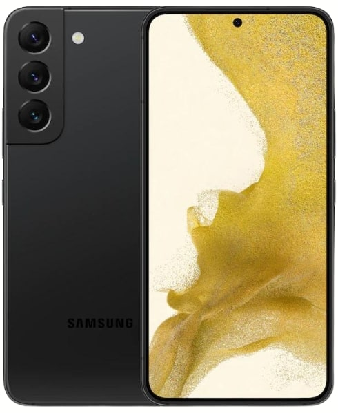
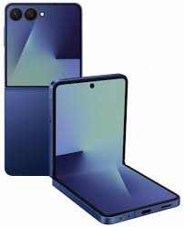
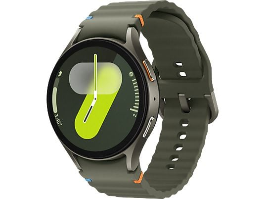

A Samsung egy dél-koreai vállalat, amelyet 1938-ban alapítottak. A technológiai piacon főként a Galaxy termékcsalád révén vált ismertté. A Samsung főként Android operációs rendszert használ, amely nagyobb szabadságot és testreszabhatóságot biztosít a felhasználóknak.
Legnépszerűbb termékei:
|
Samsung Galaxy telefonok
A Galaxy sorozat a Samsung legismertebb termékcsaládja. |
Galaxy Z Fold és Flip
A Samsung hajlítható telefonjai modern technológiát képviselnek. |
Galaxy Tab
A Galaxy Tab a Samsung tabletcsaládja. |
Galaxy Watch
A Galaxy Watch a Samsung okosórája. |
Samsung Galaxy telefonok Jellemzői:
|
Galaxy Z Fold és Flip jellemzői:
|
Galaxy Tab jellemzői:
|
Galaxy Watch jellemzői:
|
|
 |
 |

|
 |